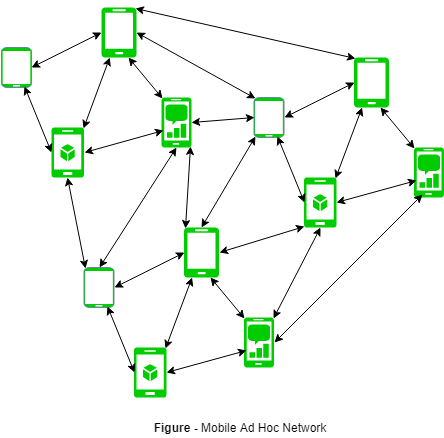

MANET stands for Mobile adhoc Network also called as wireless adhoc network or adhoc wireless network that usually has a routable networking environment on top of a Link Layer ad hoc network.. They consist of set of mobile nodes connected wirelessly in a self configured, self healing network without having a fixed infrastructure. MANET nodes are free to move randomly as the network topology changes frequently. Each node behave as a router as they forward traffic to other specified node in the network.

MANET may operate as standalone fashion or they can be the part of larger internet. They form highly dynamic autonomous topology with the presence of one or multiple different transceivers between nodes. The main challenge for the MANET is to equipped each devices to continuously maintain the information required to properly route traffic. MANETs consist of a peer-to-peer, self-forming, self-healing network MANET’s circa 2000-2015 typically communicate at radio frequencies (30MHz-5GHz). This can be used in road safety, ranging from sensors for environment, home, health, disaster rescue operations, air/land/navy defense, weapons, robots, etc.
Characteristics of MANET –
- Dynamic Topologies: Network topology which is typically multihops, may change randomly and rapidly with time, it can form unidirectional or bi-directional links.
- Bandwidth constrained, variable capacity links: Wireless links usually have lower reliability, efficiency, stability and capacity as compared to wired network.The throughput of wireless communication is even less than a radio’s maximum transmission rate after dealing with the constraints like multiple access, noise, interference conditions, etc.
- Autonomous Behavior: Each nodes can act as a host and router, which shows its autonomous behavior.
- Energy Constrained Operation: As some or all the nodes rely on batteries or other exhaustible means for their energy.Mobile nodes are characterized with less memory, power and light weight features.
- Limited Security: Wireless network are more prone to security threats. A centralized firewall is absent due to its destributed nature of operation for security, routing and host configuration.
- Less Human Intervention: They require minimum human intervention to configure the network, therefore they are dynamically autonomous in nature.
Pros and Cons of MANET –
Pros:
- Seperation from central network administration.
- Each nodes can play both the roles ie. of router and host showing autonomous nature.
- Self configuring and self healing nodes, does not require human intervention.
Cons:
- Resources are limited due to various constraints like noise, interference conditions, etc.
- Lack of authorization facilities.
- More prone to attacks due to limited physical security.